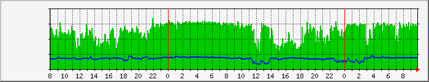

Latest news [2016-06-04]
Two major problems are found on stable release 1.2.2. Release 1.2.3 introduces workarounds for both.
1. Damage in HTB framework wrongly detected, at startup, under Ubuntu.
Ubuntu kernel, and some of the others distributions, is compiled without CONFIG_CLS_U32_PERF option, therefore, NiceShaper can't fully properly monitor the network activity. Recommended solution is kernel recompilation with mentioned option enabled.
2. Bug in kernel 3.16 (probably also 3.14 and next several versions) makes impossible to read last U32 filter on the interface under x86.
The result is NiceShaper running on 32bit Debian 8 with default kernel wrongly reports HTB framework damage. Recommended solution is upgrade kernel to version 4.X using backports or manual compilation.
NiceShaper's description
NiceShaper is the program developed for Linux router environment. It works in user space on top of standard Linux QOS implementation and iptables. By default, a proven HTB algorithm is used for the root, inner, and leaf classes, SFQ packets scheduling algorithm is the default queuing discipline (qdisc) contained within each of leaf classes, U32 and FW are used as the packets classifiers. NiceShaper provides dynamic traffic shaping approach which is more effective than traditional shaping with static rates. While constantly monitoring the traffic flowing through the router, in response to the changing load, dynamically adjusts the rate and ceil parameters values of enabled HTB classes to the values which enable the fullest possible utilization of Internet connection throughput.
NiceShaper protects each host which uses reasonable amount of shared throughput while watching over the configured optimal utilization of Internet connection. Therefore, at the asymmetric Internet connection, takes care of download when upload is close to stop up (and vice versa). NiceShaper doesn't allow for creation of congestions, thus ensures the comfort of using interactive services as well.
Besides of mentioned basis, NiceShaper offers:
- Clear and intuitive configuration makes the learning curve as short as possible.
- Directive called host which is a simplified class replacement sufficient for most configurations.
- Macros introduced to simplify creation of a lot of similar classes.
- Triggers which automatically change the selected class parameters at the specified hours of the day (alter trigger) or on exceeding certain amount of the transferred data (quota trigger).
- Packets marking and IMQ interfaces support is the workaround method for shaping the traffic incoming from source NATed private IP network.
- Comfortable and clear, even remotely accessible, inspection of working classes status.
- Dump of working classes status is also possible to be automatically written to a specified file every defined interval, for example in order to be web accessible.
It's a MRTG graph which demonstrates how NiceShaper works:

Graph is taken from the network where too many users use upload demand P2P software, what may kills the upload throughput and finally destroys download performance as well. Using NiceShaper on the router, connected through the asymmetric xDSL line, enables the best download and upload utilization. In the same time each user can surf with the comfortable throughput available, playing online games, use interactive services, and so on. NiceShaper all the time cares of that downloading or uploading the big amount of data don't disturb the interactive.
[2016-03-06]
After more than 2 years of developing version 1.2.0 of NiceShaper is finally finished!
This is very important release. NiceShaper 1.2 is mature and heavily modernized. In addition to the software, the documentation also went through a decent review and a lot of amendments in the language and substantive are introduced.
For informations regarding the full list of changes that was done during development process refer to included "changelog" document and for the complete descriptions to the documentation. Note that the changelog does not include all minor actions and focuses on important changes implemented since version 1.0.
For what it is worth to look on?:
- Dynamic shaping algorithm is redesigned and reimplemented.
- Macros of class files are introduced. Macros are tools to automate the creation of a large number of similar classes.
- New directive named "host" as simplified class replacement for simpler configurations is introduced.
- Recovery mechanism for QoS and Iptables is introduced. Recovery starts, within 60 second delay, after bad traffic report from QoS are received (e.g. during ppp interface is restarting) or Iptables chain is broken.
- Functional sections filters are replaced by local-subnet directive, which is the simple list of subnets in local network.
- Iptables usage in traffic accounting and class activity detection is minimised. Also separate iptables chains are not created for each section anymore. There are no more than two chains created now. One shared for all download mode sections and special classes, and one for upload. First is named ns_dwload and second ns_upload.
- The stats module is replaced by status.
- As we know, traffic controlled by wrapper and do-not-shape special classes is not accounted in any section. So, it was confusing, in configuration, that these types of classes required section as one of header value. Now, such value for these classes is removed.
- And more design flaws, problems and bugs are fixed.
[2013-07-04]
NiceShaper 1.0.0 is finally out!